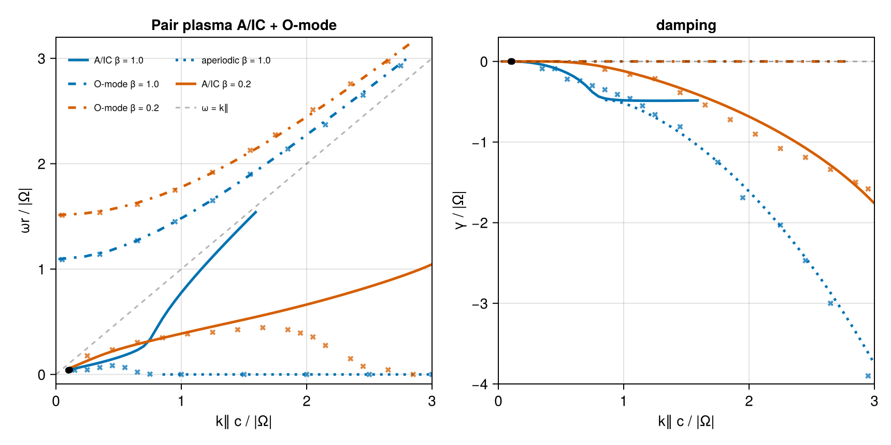

Relativistic pair plasma — (López 2014, Verscharen 2018)
A hot electron–positron pair plasma: both species share an isotropic Maxwell–Jüttner momentum distribution, μ = mc²/T = 2Π²/β∥. We reproduce the two transverse branches of §4.4, Fig. 5 of the ALPS paper (Verscharen et al. 2018, JPP 84, 905840403), which itself reproduces Fig. 1 of López et al. (2014, PoP 21, 092107), for two temperatures: β = 1.0 (μ = 2, blue) and β = 0.2 (μ = 10, red):
- the quasi-parallel A/IC wave (low
ωr): a weakly damped propagating Alfvén-like mode at smallk∥that turns strongly cyclotron-damped; - the ordinary wave (O-mode, high
ωr): a superluminal branch starting atωr ≈ 1.1(β = 1) /1.5(β = 0.2) rising toward the light line,γ ≈ 0throughout.
We verify against the two tabulated roots of the ALPS test_relativistic case (~1 % in Re ω), against Fig. 5 and cross-check the closed-form Maxwell–Jüttner susceptibility (Swanson time-integral) against the general path (CoupledVDF).
using VlasovMaxwellDispersion
using Printf
using CairoMakiePlasma setup
Normalized to the gyrofrequency |Ω| = 1; Π² = ωp²/Ω² = 1 per species; momenta in mc, k in Ω/c, k⊥ = 10⁻³ (quasi-parallel, as in ALPS). MaxwellJuttner(μ) feeds the relativistic closed-form tensor. Equal masses and opposite charges make R/L degenerate, so the parallel branch is a single relativistic Alfvén-like mode.
pair(vdf) = (NormalizedSpecies(1.0, 1.0, vdf), NormalizedSpecies(-1.0, 1.0, vdf))
plasma2 = pair(MaxwellJuttner(mu = 2.0)) ## β = 1.0
plasma10 = pair(MaxwellJuttner(mu = 10.0)) ## β = 0.2
kp = 0.0010.001Verification against ALPS (μ = 2)
ALPS test_relativistic roots: columns (k⊥, k∥, Re ω, Im ω), refined from the tabulated values with seeded Muller.
alps = [
(0.001, 0.1, 3.9621e-2, -2.644e-6),
(0.001, 0.10965, 4.3132e-2, -2.2947e-8),
]
for (kpa, kz, re, im) in alps
sol = solve(DispersionProblem(plasma2, complex(re, im), Wavenumber(kpa, kz)))
ω = sol.omega
@printf(
"k∥=%.5f ALPS Re ω=%.5f VMD Re ω=%.5f ΔRe/Re=%.1e resid=%.1e\n",
kz, re, real(ω), abs(real(ω) - re) / re, sol.resid
)
endk∥=0.10000 ALPS Re ω=0.03962 VMD Re ω=0.03919 ΔRe/Re=1.1e-02 resid=2.3e-14
k∥=0.10965 ALPS Re ω=0.04313 VMD Re ω=0.04262 ΔRe/Re=1.2e-02 resid=1.3e-14Re ω agrees to ~1 %. The damping (Im ω ~ 10⁻⁶) is near-marginal and far more sensitive to ALPS's coarse (p⊥,p∥) sampling than the propagation frequency, so — as in the ALPS paper — the comparison is on Re ω.
Closed-form vs. general relativistic path (μ = 2)
The analytic Swanson susceptibility (MaxwellJuttner) and the general grid-tabulated path (CoupledVDF with Relativistic() closure) are two independent evaluators of the same relativistic tensor. We re-polish representative A/IC roots — the two ALPS points, a propagating hump point, and two purely-damped points — with the CoupledVDF plasma seeded from the closed-form root, and report |Δω|.
plasmaC2 = pair(CoupledVDF(MaxwellJuttner(2.0); para = (-15.0, 15.0), perp = 15.0, regime = Relativistic()))
xcheck = [
(0.1, complex(3.9621e-2, -2.644e-6)), (0.10965, complex(4.3132e-2, -2.29e-8)),
(0.5, complex(0.163, -0.11)), (1.5, complex(0.0, -0.939)), (3.0, complex(0.0, -3.749)),
]
for (kz, ω0) in xcheck
a = solve(DispersionProblem(plasma2, ω0, Wavenumber(kp, kz)))
b = solve(DispersionProblem(plasmaC2, a.omega, Wavenumber(kp, kz)))
@printf(
"k∥=%.3f ω=%.5f%+.5fim |Δω|(closed−general)=%.1e\n",
kz, real(a.omega), imag(a.omega), abs(a.omega - b.omega)
)
endk∥=0.100 ω=0.03919-0.00003im |Δω|(closed−general)=3.5e-05
k∥=0.110 ω=0.04262-0.00007im |Δω|(closed−general)=3.7e-05
k∥=0.500 ω=0.16297-0.11048im |Δω|(closed−general)=2.0e-05
k∥=1.500 ω=0.00000-0.93928im |Δω|(closed−general)=2.2e-04
k∥=3.000 ω=0.00000-3.74944im |Δω|(closed−general)=5.8e-04The two paths agree to |Δω| ≲ 6·10⁻⁴ (tightest, ~2·10⁻⁵, for the propagating roots; loosest at the deep-damped k∥ = 3 point, limited by the CoupledVDF momentum-grid truncation), confirming both evaluators resolve the same relativistic mode.
A/IC-related roots
For μ = 2 our transverse dispersion relation (identical at k⊥ = 0 and 10⁻³) contains two distinct root families:
- A propagating family continued from the ALPS seed.
ωrrises andγdeepens from0to≈ −0.46byk∥ = 0.85, matching the digitized Fig. 5 blueγthroughk∥ ≈ 0.65(−0.236vs.−0.24atk∥ = 0.65). - A purely imaginary family, displayed over
0.85 ≤ k∥ ≤ 3, (ωr = 0, pinned by the pair plasma'sω ↔ −ω̄mirror symmetry) whoseγdives monotonically to−3.75atk∥ = 3— Fig. 5's blue dive (≈ −3.9). On the imaginary axis the deflated determinant is exactly real, so the root is unambiguous (resid ~ 10⁻¹⁰).
Their damping rates happen to be close near k∥ = 0.85, but the roots do not coalesce there (ω ≈ 0.53 − 0.46im versus ω ≈ −0.48im); we therefore do not splice them into one eigenmode branch. The propagating root rises toward the light line instead of following the published finite-ωr descent. This is precisely the "large-k∥/low-ωr end of the A/IC branch" where Verscharen et al. §4.4 flag the visible deviation between López and ALPS — ALPS's own ωr tails in Fig. 5 overshoot the López descent the same way.
For μ = 10 the traced propagating root's γ tracks the digitized red curve to ≲ 0.2 through k∥ = 3 (−1.76 vs. −1.58), while its ωr keeps rising past the published peak (≈ 0.44 at k∥ ≈ 1.65) instead of descending — the same §4.4 deviation zone, stronger at this temperature in our determinant.
Branch continuation
function trace(plasma, kzs, seed)
ω = similar(kzs, ComplexF64)
s = seed
for i in eachindex(kzs)
s = solve(DispersionProblem(plasma, s, Wavenumber(kp, kzs[i]))).omega
ω[i] = s
end
return ω
end
# μ=2 propagating: forward from the ALPS k∥=0.1 seed (backward to 0.05)
kz2p = collect(0.05:0.05:1.6)
j0 = findfirst(==(0.1), kz2p)
ω2p = similar(kz2p, ComplexF64)
ω2p[j0:end] = trace(plasma2, kz2p[j0:end], complex(alps[1][3], alps[1][4]))
ω2p[1:(j0 - 1)] = reverse(trace(plasma2, reverse(kz2p[1:(j0 - 1)]), ω2p[j0]))
# μ=2 distinct purely imaginary family over the displayed interval
kz2d = collect(0.85:0.05:3.0)
ω2d = trace(plasma2, kz2d, complex(1.0e-4, -0.478))
# μ=10: single propagating root over the full range; ωr departs the published
# descent past k≈1.8. Fresh near-marginal seeds below k∥ ≈ 0.3
# make Muller wander to the mirror (negative-frequency) root, so continue
# forward and backward from a robust k∥ = 0.3 seed.
kz10 = collect(0.1:0.05:3.0)
j10 = findfirst(==(0.3), kz10)
ω10 = similar(kz10, ComplexF64)
ω10[j10:end] = trace(plasma10, kz10[j10:end], complex(0.155, -1.0e-4))
ω10[1:(j10 - 1)] = reverse(trace(plasma10, reverse(kz10[1:(j10 - 1)]), ω10[j10]))4-element Vector{ComplexF64}:
0.05302647622155299 - 1.910021032599041e-7im
0.07920799601905552 - 1.9063866993002834e-7im
0.10498093068884462 - 1.476199177537354e-7im
0.13017724438536116 - 2.9486233144266426e-7imO-modes
Superluminal (ωr > k∥): the closed-form Landau continuation is unsupported for damped superluminal ω, but the O-mode is near-marginal (γ ≈ 0), so we locate it on the real axis as the |det 𝒟| → 0 minimum via the CoupledVDF path, continued in k∥. Momentum bounds follow the thermal spread (±15 mc at μ = 2, ±5 mc at μ = 10 — the fixed-size grid loses the distribution peak if the box is much wider than the VDF).
using VlasovMaxwellDispersion: dispersion_function
function omode(plasmaC, kzs, wr0)
out = similar(kzs)
wr = wr0
for i in eachindex(kzs)
g = dispersion_function(DispersionProblem(plasmaC, complex(wr), Wavenumber(kp, kzs[i])))
f = w -> abs(g(complex(w, 0.0)))
lo, hi = max(0.9wr, kzs[i] + 0.02), wr + 0.4 + 0.25kzs[i]
for _ in 1:60
m1, m2 = (2lo + hi) / 3, (lo + 2hi) / 3
f(m1) < f(m2) ? (hi = m2) : (lo = m1)
end
wr = (lo + hi) / 2
out[i] = wr
end
return out
end
plasmaC10 = pair(CoupledVDF(MaxwellJuttner(10.0); para = (-5.0, 5.0), perp = 5.0, regime = Relativistic()))
kzo = collect(0.02:0.2:3.0)
ωo2 = omode(plasmaC2, kzo, 1.1)
ωo10 = omode(plasmaC10, kzo, 1.5)15-element Vector{Float64}:
1.5135107167761708
1.5266637171225108
1.5616712545962392
1.617965344827532
1.6941999271370118
1.7885096426198146
1.8988477674034554
2.0231324034924802
2.159338361373586
2.305575163763399
2.4601484483906537
2.621593446443436
2.7886796154534546
2.960394361682561
3.1359155563683636Quantitative check against digitized Fig. 5
fig5 = (
aic_wr2 = [
0.15 0.04; 0.25 0.044; 0.35 0.066; 0.45 0.084; 0.55 0.066;
0.65 0.022; 0.75 0.003; 1.0 0.0; 1.5 0.0; 2.0 0.0; 2.5 0.0; 3.0 0.0
],
aic_gm2 = [
0.35 -0.09; 0.45 -0.09; 0.55 -0.22; 0.65 -0.24; 0.75 -0.3;
0.85 -0.35; 0.95 -0.41; 1.05 -0.46; 1.15 -0.55; 1.25 -0.66; 1.45 -0.81;
1.75 -1.25; 1.95 -1.69; 2.25 -2.03; 2.45 -2.47; 2.65 -3.0; 2.95 -3.9
],
o_wr2 = [
0.05 1.09; 0.35 1.14; 0.65 1.27; 0.95 1.45; 1.25 1.65; 1.55 1.9;
1.85 2.14; 2.15 2.37; 2.45 2.65; 2.75 2.93
],
aic_wr10 = [
0.25 0.177; 0.45 0.234; 0.65 0.304; 0.85 0.348; 1.05 0.385;
1.25 0.4; 1.45 0.425; 1.65 0.444; 1.85 0.425; 1.95 0.393; 2.05 0.356;
2.15 0.275; 2.35 0.15; 2.45 0.077; 2.65 0.044; 2.85 0.0
],
aic_gm10 = [
0.85 -0.099; 1.05 -0.16; 1.25 -0.214; 1.45 -0.386; 1.65 -0.54;
1.85 -0.722; 2.05 -0.902; 2.25 -1.08; 2.45 -1.19; 2.65 -1.339;
2.85 -1.499; 2.95 -1.581
],
o_wr10 = [
0.05 1.511; 0.35 1.537; 0.65 1.614; 0.95 1.749; 1.25 1.918;
1.55 2.127; 1.75 2.274; 2.05 2.512; 2.35 2.758; 2.65 2.971
],
)
println("μ=10 A/IC γ vs digitized Fig. 5 (red):")
for r in eachrow(fig5.aic_gm10)
kd, gd = r
i = argmin(abs.(kz10 .- kd))
@printf(" k∥=%.2f VMD γ=%+.3f Fig5 γ=%+.3f Δ=%+.3f\n", kz10[i], imag(ω10[i]), gd, imag(ω10[i]) - gd)
end
println("O-mode ωr (VMD | Fig5):")
for (m, ωo, lab) in ((fig5.o_wr10, ωo10, "μ=10"), (fig5.o_wr2, ωo2, "μ=2 "))
for j in (1, 5, 10)
kd, wd = m[j, 1], m[j, 2]
i = argmin(abs.(kzo .- kd))
@printf(" %s: k∥=%.2f %.3f | %.3f\n", lab, kzo[i], ωo[i], wd)
end
endμ=10 A/IC γ vs digitized Fig. 5 (red):
k∥=0.85 VMD γ=-0.069 Fig5 γ=-0.099 Δ=+0.030
k∥=1.05 VMD γ=-0.139 Fig5 γ=-0.160 Δ=+0.021
k∥=1.25 VMD γ=-0.228 Fig5 γ=-0.214 Δ=-0.014
k∥=1.45 VMD γ=-0.330 Fig5 γ=-0.386 Δ=+0.056
k∥=1.65 VMD γ=-0.446 Fig5 γ=-0.540 Δ=+0.094
k∥=1.85 VMD γ=-0.576 Fig5 γ=-0.722 Δ=+0.146
k∥=2.05 VMD γ=-0.722 Fig5 γ=-0.902 Δ=+0.180
k∥=2.25 VMD γ=-0.887 Fig5 γ=-1.080 Δ=+0.193
k∥=2.45 VMD γ=-1.074 Fig5 γ=-1.190 Δ=+0.116
k∥=2.65 VMD γ=-1.288 Fig5 γ=-1.339 Δ=+0.051
k∥=2.85 VMD γ=-1.539 Fig5 γ=-1.499 Δ=-0.040
k∥=2.95 VMD γ=-1.683 Fig5 γ=-1.581 Δ=-0.102
O-mode ωr (VMD | Fig5):
μ=10: k∥=0.02 1.514 | 1.511
μ=10: k∥=1.22 1.899 | 1.918
μ=10: k∥=2.62 2.960 | 2.971
μ=2 : k∥=0.02 1.095 | 1.090
μ=2 : k∥=1.22 1.637 | 1.650
μ=2 : k∥=2.82 3.017 | 2.930Figure 5 reproduction
Blue: β = 1 (μ = 2); red: β = 0.2 (μ = 10). Crosses: digitized Fig. 5; open circles: tabulated ALPS roots. Line style identifies the root family: solid A/IC-like propagating, dash-dot O-mode, dotted aperiodic. Color identifies temperature. These styles deliberately do not connect the distinct propagating and purely imaginary families.
blu, red = Makie.wong_colors()[1], Makie.wong_colors()[6]
fig = Figure(size = (860, 430))
axr = Axis(
fig[1, 1]; xlabel = "k∥ c / |Ω|", ylabel = "ωr / |Ω|",
title = "Pair plasma A/IC + O-mode", limits = (0, 3, -0.09, 3.2)
)
axi = Axis(
fig[1, 2]; xlabel = "k∥ c / |Ω|", ylabel = "γ / |Ω|",
title = "damping", limits = (0, 3, -4, 0.3)
)
for (kzp, ωp, kzd, ωd, ωoo, c, lab) in (
(kz2p, ω2p, kz2d, ω2d, ωo2, blu, "β = 1.0"),
(kz10, ω10, nothing, nothing, ωo10, red, "β = 0.2"),
)
lines!(axr, kzp, real.(ωp); color = c, linewidth = 2.5, label = "A/IC $lab")
lines!(axi, kzp, imag.(ωp); color = c, linewidth = 2.5)
if !isnothing(kzd)
lines!(axr, kzd, zero(kzd); color = c, linewidth = 2.5, linestyle = :dot, label = "aperiodic $lab")
lines!(axi, kzd, imag.(ωd); color = c, linewidth = 2.5, linestyle = :dot)
end
lines!(axr, kzo, ωoo; color = c, linewidth = 2.5, linestyle = :dashdot, label = "O-mode $lab")
lines!(axi, kzo, zero(kzo); color = c, linewidth = 2.5, linestyle = :dashdot)
end
lines!(axr, 0:3, 0:3; color = (:black, 0.3), linestyle = :dash, label = "ω = k∥")
hlines!(axi, [0.0]; color = (:black, 0.3), linestyle = :dash)
for (m, c) in ((fig5.aic_wr2, blu), (fig5.o_wr2, blu), (fig5.aic_wr10, red), (fig5.o_wr10, red))
scatter!(axr, m[:, 1], m[:, 2]; color = (c, 0.75), marker = :xcross, markersize = 8)
end
for (m, c) in ((fig5.aic_gm2, blu), (fig5.aic_gm10, red))
scatter!(axi, m[:, 1], m[:, 2]; color = (c, 0.75), marker = :xcross, markersize = 8)
end
scatter!(axr, [a[2] for a in alps], [a[3] for a in alps]; color = :black, markersize = 9)
scatter!(axi, [a[2] for a in alps], [a[4] for a in alps]; color = :black, markersize = 9)
axislegend(axr; position = :lt, framevisible = false, labelsize = 9, nbanks = 2)
fig
The A/IC ωr descent: a continuation artifact in the references
Everything on this page matches the published references — the tabulated ALPS roots (~1 % Re ω), the damping curves at both temperatures, and both O-modes — except the A/IC ωr descent ("anomalous zone" of López et al.): López/ALPS show ωr turning down to zero past the hump peak, while our corrected continuation instead carries the rising roots plotted above. At the tested μ = 2 points, our two independent evaluators agree to |Δω| ≲ 6·10⁻⁴.
We adjudicated this numerically, since analytic continuation off the upper half-plane — where all three codes agree and no continuation is needed — is unique:
- Reimplementing López et al. (2014) Eqs. (23)–(26) reproduces their published curves exactly (their formula does carry the descent roots, e.g.
μ = 10peakωr = 0.443atk∥ = 1.7), and matches our root where everyone agrees (ω = 0.03919atk∥ = 0.1— identical to VMD). - AAA rational extrapolation of dense upper-half-plane samples of both functions (held-out residuals
10⁻¹¹–10⁻¹⁰, stable under grid and degree changes) lands on our root (Δ ≤ 0.002) and away from the López descent root (Δ ≈ 0.05–0.5): López's own upper-half-plane values do not continue to their descent root. - The mechanism: their continuation term
θ(the Heaviside-supportedπσΘ(γ−γ₁)Θ(γ₂−γ)in Eqs. 23–24) depends only onRe zandsign(Im z), which enforces continuity across the real axis but violates Cauchy–Riemann below it: the continuedΛ_Lhas holomorphy defect|∂f/∂z̄|/|∂f/∂z| ≈ 0.09–3in the lower half-plane, versus~10⁻⁶for our determinant (and for their ownθ-less integrand). The non-holomorphicΛ_Lacquires a spurious zero — the anomalous-zone descent — with no counterpart in the true continuation. ALPS's fitted continuation partially chases the same artifact, which is why itsωrtails overshoot López's in our direction (their §4.4 deviation).
The corrected root set therefore contains a rising propagating family and, for μ = 2, a distinct purely imaginary family. The finite-ωr descent is not a mode of the Maxwell–Jüttner pair plasma.
This page was generated using Literate.jl.